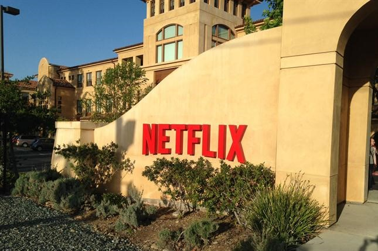

Netflix surge en 1997 en California, Estados Unidos como una compañía de alquiler de DVD entregados por vía postal. A lo largo de su historia, la empresa ha sufrido diversas transformaciones hasta que, para el año 2019, se trata de una empresa mediática que participa en la producción audiovisual desde la concepción o adquisición del producto hasta su difusión, en este caso a través de una plataforma por internet.
Netflix, Inc. es una empresa de entretenimiento estadounidense, que opera a nivel mundial, cuyo servicio principal es la distribución de contenidos audiovisuales a través de una plataforma en línea o servicio de video bajo demanda por streaming. Ubicada en Los Gatos, en California, la compañía se crea en 1997 y un año después comienza su actividad ofreciendo un servicio de alquiler de DVD a través del correo postal. Actualmente, Netflix participa en la producción de obras audiovisuales, desde la creación o adquisición del producto hasta su difusión mundial.
En el año 2000, aún con el alquiler de DVD como único servicio, Netflix introduce un sistema de recomendación personalizado, basado en la calificación de una a cinco estrellas que sus clientes hacían de los materiales que alquilaban a través de su sitio por Internet. La mejora continua de este sistema —que en 2017 sería cambiado por uno de «pulgar arriba/abajo»—, así como el uso de otros datos que la plataforma obtiene de sus clientes conocido como data-mining o minería de datos, es considerado como la causa principal del éxito de la compañía.
En 2007, Netflix inicia su servicio de VOD en los Estados Unidos, exclusivamente para ser usado a través de computadoras personales; a partir de 2008 se agregan diferentes opciones para acceder al catálogo por retransmisión en directo: consolas de video juegos, televisores inteligentes, tabletas, etc. El 25 de febrero de 2007 entraba su DVD número mil millones. En 2009 su catálogo físico ofrece 100 mil títulos y su clientela supera los 10 millones de suscriptores.
En 2011, la empresa inicia operaciones por primera vez fuera del territorio estadounidense y canadiense, ofreciendo su catálogo por retransmisión en directo en la región de América Latina y el Caribe. En 2012 ofrece sus servicios en algunos países de Europa, y a partir de 2016 ofrece sus contenidos a todo el mundo con excepción de la región de Crimea, y los territorios de Corea del Norte, China y Siria.
El 16 de enero de 2014, la nominación del documental The Square a un Premio de la Academia se convirtió en la primera en la historia para una producción original de Netflix. Los productos en español más exitosos mundialmente son las series de La casa de papel y Élite, ambos situados en el top 10 mundial de las series más vistas en el mundo en 2019.
Al final del primer trimestre de 2020, la plataforma contaba con unos 183 millones de clientes en todo el mundo, la mayoría fuera de Estados Unidos. Aunque las estimaciones hechas por Wall Street para ese periodo eran de 7.6 millones de nuevos clientes, la cuarentena puesta en marcha en distintos países del mundo a causa de la pandemia de Covid-19 contribuyó a que la cifra real fuera de más del doble (15.8 millones).